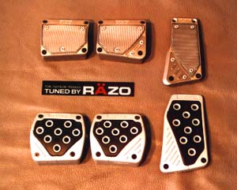

RACING PEDALS

Racing pedals give you grip and has a great effect on the appearance of your interior. Toysport carries a variety of racing pedals. Shown here are the RAZO pedals and the Lonza pedals.
BADGES and EMBLEMS
Toysport offers a wide variety of emblems and badges designed to retrofit in the standard holes of a particular vehicle, or it also comes with double-sided tape. These badges and emblems offer a unique way to personalize your car. Available for all japanese, European, and American cars.